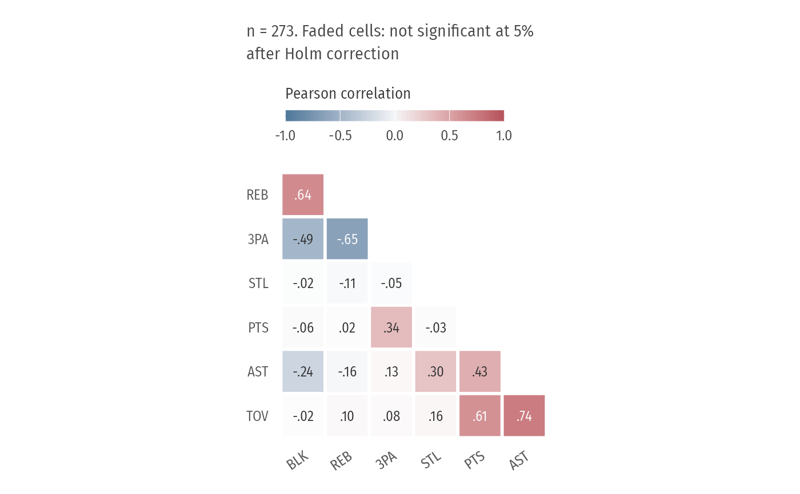

Lower triangle only, variables ordered by hierarchical clustering so related stats sit together, coefficients printed in each cell, and correlations that are not significant (after Holm correction across all pairs) faded rather than crossed out.
Examples
p <- subset(player_seasons, minutes >= 1000)
p <- transform(p, PTS = pts / minutes, AST = ast / minutes, TOV = tov / minutes,
REB = (orb + drb) / minutes, BLK = blk / minutes, STL = stl / minutes,
`3PA` = p3a / minutes, check.names = FALSE)
plot_corr_matrix(p, c("PTS", "AST", "TOV", "REB", "BLK", "STL", "3PA"))
